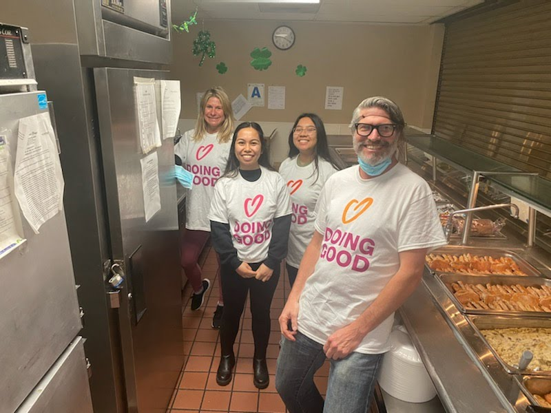
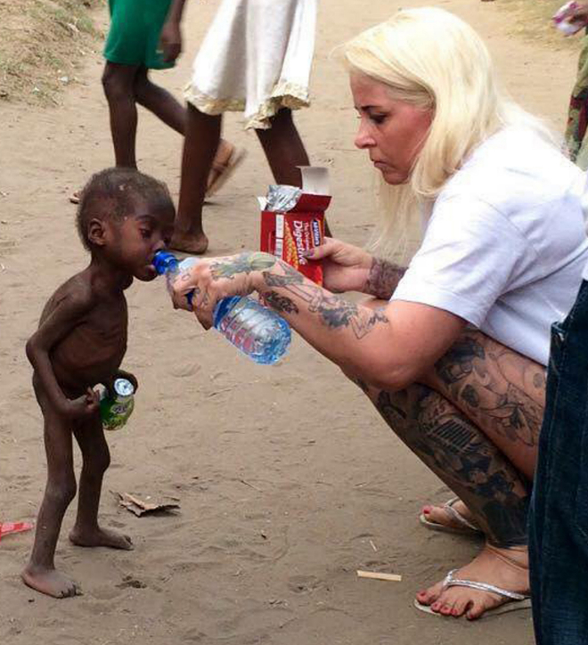
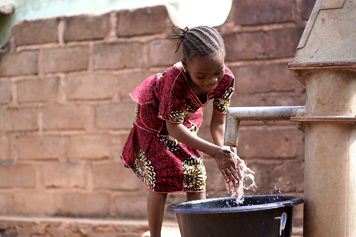

Proyectos Relacionados con el ODS 3

País: Colombia
Organización: Banco de Sangre Santa María
Para el Día de las Buenas Acciones 2022, el banco de sangre local, Banco de Sangre Santa María, se unió a compañías locales y universidades de la Municipalidad de Sucre y organizó una campaña de donación de sangre. Donar sangre es simple y salva vidas todos los días.

País: Estados Unidos
Organización: HandsOn San Diego
Auntie Helen es una organización que provee de comida y vestimenta, entre otras donaciones, a personas de bajos ingresos y personas con alguna condición de salud tal como HIV/SIDA. En el Día de las Buenas Acciones, HandsOn San Diego se alió con Auntie Helen y colaboró con la clasificación, empaque y distribución de ropa en varias áreas designadas.

País: Nigeria
Organización: Kleo Aid Foundation for Children
Kleo Aid Foundation for Children (Fundación para los Niños Kleo Aid) implementó dos proyectos enfocados en Salud y Bienestar para el Día de las Buenas Acciones. El primer proyecto consistió en capacitar y crear conciencia en la población sobre los síntomas y signos de la tuberculosis, medidas preventivas y también sobre la necesidad de acabar con la estigmatización de los enfermos.
El segundo proyecto fue una campaña de concientización acerca de la importancia de una buena higiene personal para los habitantes del campamento de refugiados de Abuja, en donde también realizaron exámenes de la vista.

País: Haití
Organización: ANACAONA Community
En honor al Día de las Buenas Acciones, ANACAONA Community, un negocio social de Haití extendió el trabajo que hacen normalmente en educación en higiene y buenas prácticas de salud y construyó una estación para el lavado de manos en la Escuela Pasteur Dieusse, que se encuentra en Cite-Soleil, una de las comunidades más pobres del país.
Además, ofreció entrenamiento a través de sus embajadores tanto en la escuela como en los hogares para asegurarse que el mensaje llegara a las familias de los estudiantes.